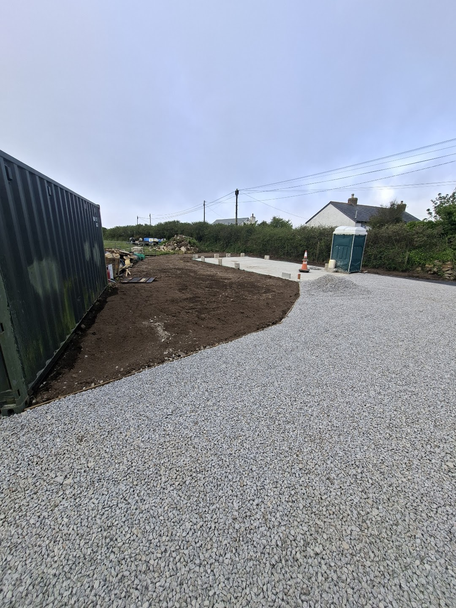

Recent Work Across Cornwall
Construction Projects
A selection of genuine work in progress and completed groundworks. We support domestic, commercial and rural projects with practical planning and dependable delivery.
Domestic Projects
Careful groundworks and external construction for homes.



Commercial & Site Work
Capable support for managed sites, contractors and landowners.


Planning A Project?